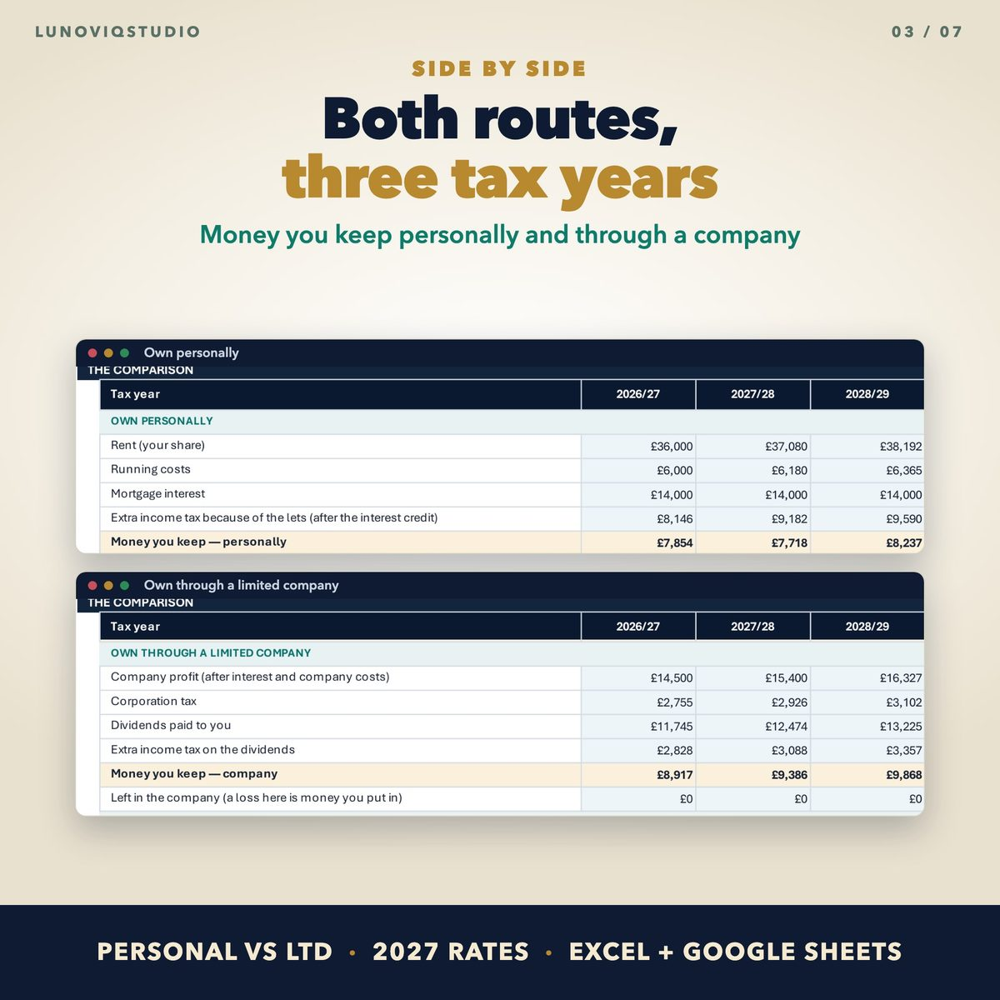
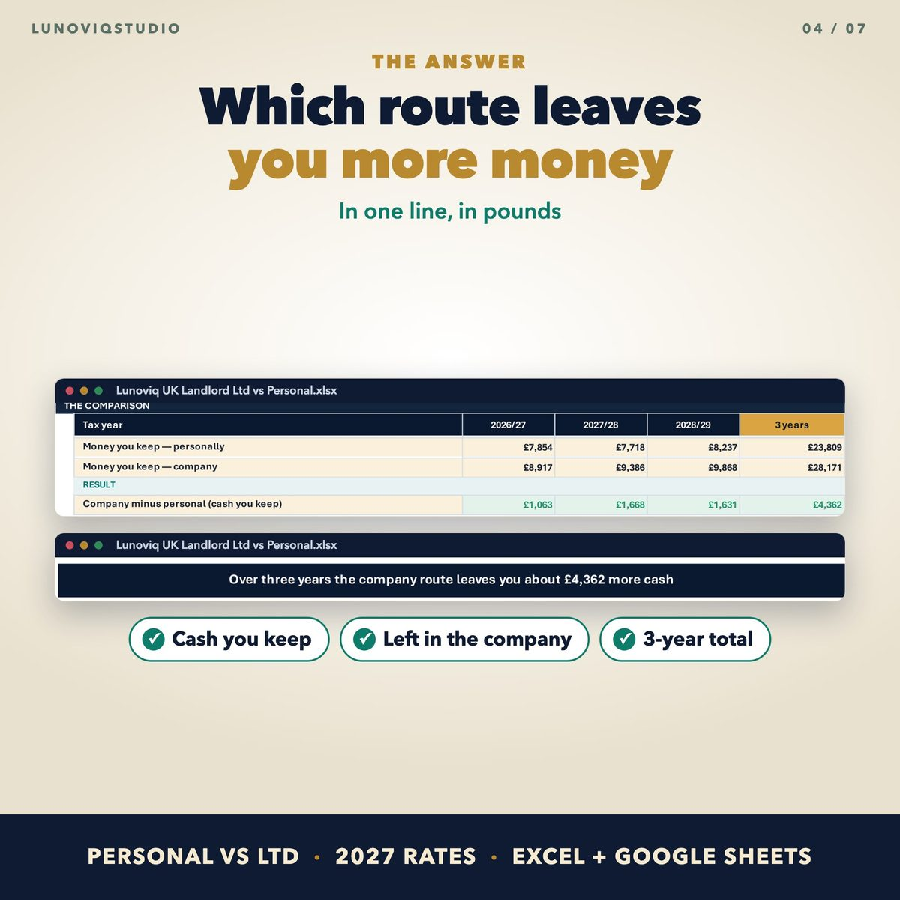
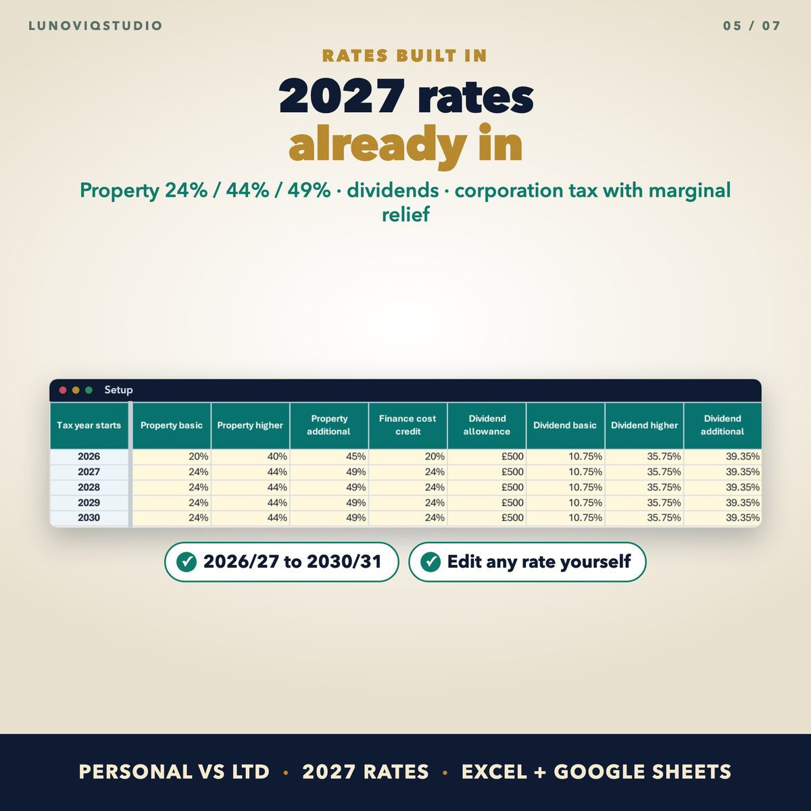

Home › Spreadsheets › Personal vs Limited Company Calculator for UK Landlords
Personal vs Limited Company Calculator for UK Landlords
Type your rent, costs, mortgage interest and other income and see which route leaves you more money over three tax years, with the April 2027 property rates built in.
Made for: UK landlords deciding whether to buy their next property in a company, or wondering what the 2027 rates mean for them.
Get it on EtsyWhat it doesWhat it does
Both routes, three tax years
Money you keep personally and through a company, year by year, with a three-year total.
Own personally
Property income rates (24% / 44% / 49% from April 2027), the Section 24 mortgage interest credit and the personal allowance taper.
Own through a company
Mortgage interest as a normal cost, corporation tax at 19% to 25% with marginal relief, and dividend tax on what you take out.
Your situation
Other income, your share, rent and cost growth, extra company costs and how much profit you take out.
Rates you can edit
Every rate for 2026/27 to 2030/31 on one Setup sheet.
Every step shown
Workings under the table, so you or your accountant can check each figure.
See it



What you get
- Excel calculator with example figures
- Google Sheets version (copy link in the PDF)
Instant download. One-off price, no subscription, no macros.
Questions
Does it include the cost of moving property into a company?
No. It compares the yearly running costs. Stamp Duty, Capital Gains Tax and refinancing on a transfer are listed in the workbook so you can discuss them with an accountant.
Is it tax advice?
No. It is a planning aid for one owner in England, Wales or Northern Ireland.